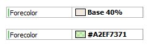

The color editor allows users to create and edit their own colors; in addition, it offers a wide range of predefined colors.
The Color Editor, which is accessed when editing any property of Color type, provides three options:
- Palette: It contains the colors in the palette. This option allows selecting any color of the palette and setting the Alpha property that will be used in the Color type property that is being edited. The purpose of the Palette option is to offer a color scheme, usually defined by graphic designers, to be used in the entire application. Colors from the Palette, are defined and edited (if necessary) in the Colors option.
- Named: It contains a set of non-editable standard colors. Colors can be searched for by their names to set their Alpha property that will be used in the Color type property that is being edited. The purpose of this option is to provide a set of predefined colors.
- Custom: It allows users to create their own colors.
The Custom option allows editing colors using RGB or HSV selectors. This provides greater flexibility when creating or editing a color.
This property allows users to define the transparency that the color will have. It can be defined in percentage values, or from the Custom option in hexadecimal notation (see "rgba" field in "Custom" option image).
The alpha channel can not be set in the color Palette, this property must be set in the Theme Class.
This property defines the color in hexadecimal notation using the Red, Green, Blue and Alpha components. The value of this field is updated automatically when the color is modified, but it is also possible to update it directly using the "rgba" field (the value must be written in hexadecimal notation).
- The "Palette" option colors are created from the Colors tab of the Theme.
- A color can be defined using its RGBA representation in hexadecimal notation (see "rgba" field in "Custom" option image).
- The current restriction is that this palette can only be used from the Theme.
- When using the GeneXus Web Form designer the colors will always be displayed using alpha = 100% regardless of the real value of this property.
Once the color property has been defined it will be displayed as follows:

If the chosen color is from the Palette or a Named color, the name of the color will be displayed followed by its alpha component (defined in percentage values). In the first property shown in the previous image, the color with name "Base" was selected from the Palette with Alpha = 40%, giving as result "Base 40%".
If the color is defined using Custom option, it will be definied as #RGBA where each component its represented in hexadecimal notation. In the second property shown in the previous image, the color is defined using the Custom option, giving as result "#A2EF7371". Its components were defined as follows: Red = A2 (162), Green = EF (239), Blue = 73 (115) y Alpha = 71 (113).
This feature is available as of GeneXus Tilo Beta 3
|